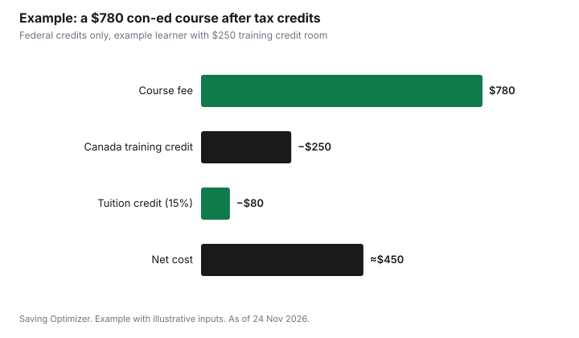

Education · Canada
Continuing Education Courses: Costs, Tax Credits and Value

Continuing education courses at Canadian colleges and universities usually cost a few hundred dollars each, and a certificate made of several courses can run into the low thousands. Many of those fees qualify for the federal tuition tax credit if the course is at post-secondary level, or is an occupational skills course at a certified institution, and you paid more than $100 to that institution in the year. Ask for a T2202 before you enrol, and check whether your employer will pay first.
Key takeaways
- The federal tuition tax credit (line 32300) is 15% of eligible tuition. Fees must be over $100 per institution in the year.
- Eligible courses are post-secondary level, or occupational skills courses at an institution certified by Employment and Social Development Canada, for students 16 or older.
- Hobby and recreation courses do not qualify, even at a college.
- The Canada training credit can refund up to 50% of eligible fees from a balance that grows $250 a year for workers aged 26 to 65.
- Example: a $780 course costs about $527 after the federal tuition credit and $250 of training credit room.
What con-ed costs
Prices vary by school, subject and format. A single evening or online course at an Ontario college or university continuing education school often sits in the few-hundred-dollar range, while professional certificates in project management, accounting or data analysis add up because they bundle six to ten courses. Some programs add textbook, software or exam fees that are not included in the course price. Ask for the full program cost, not the per-course price.
Tuition credit eligibility
The Canada Revenue Agency's line 32300 page sets the test. Tuition fees qualify if they were paid to a university, college or other post-secondary institution in Canada for courses at the post-secondary level, or to an institution certified by ESDC for courses that develop or improve skills in an occupation, if you were 16 or older. The fees you paid to each institution must be more than $100. You need an official tax receipt or a T2202 from the school.
| Question | Qualifies if | Watch out for |
|---|---|---|
| Is the course post-secondary level? | Yes, at a university or college | Non-credit hobby courses |
| Or occupational skills? | Yes, at an ESDC-certified institution, age 16+ | Uncertified private trainers |
| Fees over $100 at that school? | Yes, in the calendar year | Several small courses at different schools |
| Do you get a T2202 or receipt? | Yes, from the school | Course paid through a third-party platform |
| Did your employer reimburse you? | No, or the reimbursement is a taxable benefit | Tax-free reimbursement means you can't claim |
Unused tuition amounts carry forward to later years. A student can also transfer up to $5,000 of the federal amount, less what they use, to a parent, grandparent or spouse. See our guide to transferring the tuition credit.
Employer funding
Before you pay, ask your employer about a training budget or tuition reimbursement. Many employers pay for job-related courses, sometimes on the condition that you pass and stay for a period. If the employer reimburses you and the benefit is not taxable to you, you generally cannot also claim the tuition credit for the same fees. If you are laid off, programs like Better Jobs Ontario may fund retraining.
Online vs in person
Online sections usually cost the same as classroom ones at public colleges, but you save on transit, parking and time. Live online classes keep the structure of a classroom. Self-paced courses are flexible but have higher drop-out rates, which matters if you paid upfront and the refund window is short. Check the withdrawal deadline: most schools refund only in the first week or two.
Picking a course: an example
An example learner pays $780 for a college continuing education course in bookkeeping. They are 40 and have $250 of Canada training credit room.

The Canada training credit refunds the lesser of half the fees ($390) and the available room ($250), so $250. The federal tuition credit is 15% of the fees left after subtracting the training credit: 15% of $530, about $80. Net cost: $780 minus $250 minus about $80, roughly $450 before any provincial credit. Ontario no longer has a provincial tuition credit, but some other provinces do. Our Canada training credit guide shows how to check your room.
Sources
- Canada Revenue Agency, Line 32300 – Your tuition, education, and textbook amounts (eligible institutions and courses; fees over $100 per institution; T2202), checked 24 Nov 2026.
- Canada Revenue Agency, Canada training credit (ages 26-65; $250 a year; $5,000 lifetime; 50% of eligible fees), checked 24 Nov 2026.
Frequently asked questions
Can I claim continuing education courses on my taxes?
Often, yes. Fees for post-secondary-level courses, or occupational skills courses at an ESDC-certified institution if you are 16 or older, can qualify for the federal tuition tax credit when you paid more than $100 to that institution in the year. You need a T2202 or official receipt.
Do hobby courses qualify for the tuition credit?
No. Courses taken for recreation or personal interest, such as a hobby painting class, generally don't qualify even if a college offers them.
Can I claim the tuition credit if my employer paid?
Generally not if your employer reimbursed you and the reimbursement wasn't included in your income. If the reimbursement was a taxable benefit, you may be able to claim.
What is the Canada training credit?
It's a refundable credit for workers aged 26 to 65. Eligible people build $250 of room a year, up to $5,000 over a lifetime, and can claim up to half of eligible tuition fees from that room.
How do I choose a continuing education course?
Check the total program cost, whether the school issues a T2202, the refund deadline, and whether your employer or a provincial program will pay. Then choose the format you are most likely to finish.
Researched and drafted with AI assistance and fact-checked against official Canadian sources. How we create content.
Note: This is not tax advice. Confirm eligibility with the CRA and your school. Education only.